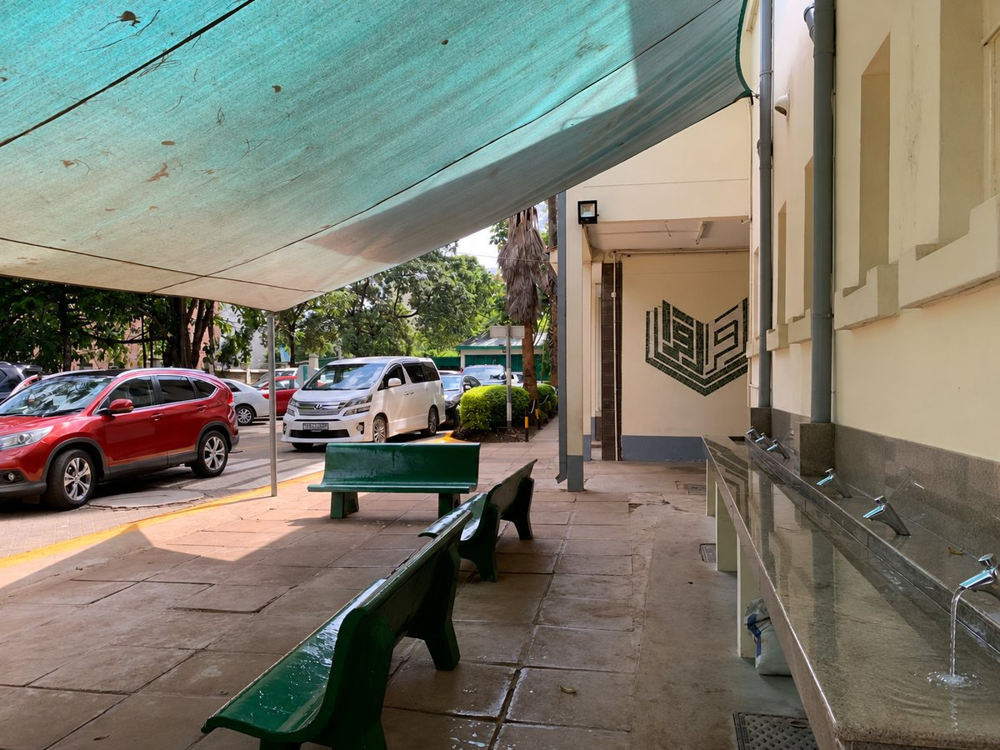

Students can help protect the environment through small, consistent actions. Reducing waste, saving water and working together can make school communities cleaner and more sustainable.

Four ways to take action
Reduce Waste
The best waste is the waste that is never created.
Carry a refillable bottle
Use reusable containers
Avoid unnecessary packaging
Reduce paper waste
Save Water
Clean water is valuable and should not be wasted.
Turn off taps
Report leaks
Avoid wasting water
Encourage responsible use
Sort Waste
Waste can only be recycled if it goes in the correct bin.
Use the correct bins
Separate recyclable materials where facilities exist
Avoid mixing recyclable and general waste
Follow school waste disposal rules
Work Together
Actions have more effect when a whole community takes part.
Join organised clean-ups
Create environmental posters
Encourage responsible habits
Participate in environmental school activities
My Environmental Action Checklist
Tick each action you have completed. Your ticks are saved only in this browser on this device. No personal information is collected.
0 of 5 actions completed
Test your knowledge
Try the short pollution quiz and see how much you have learned.